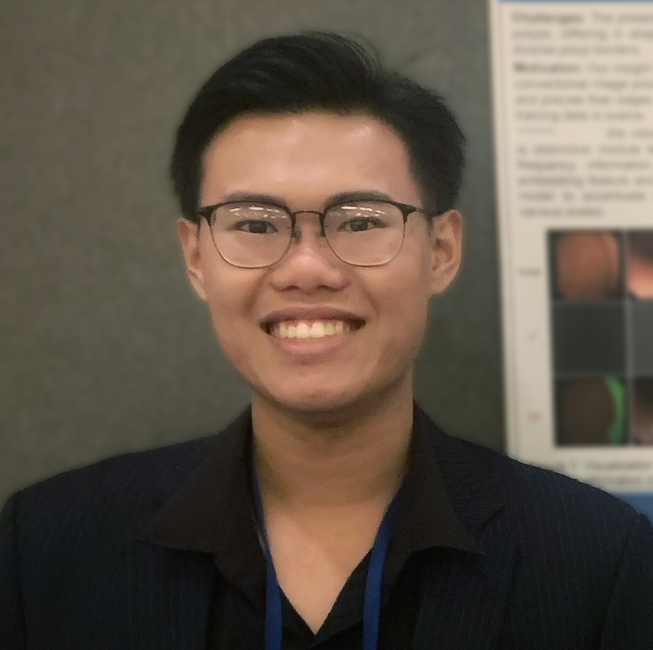

"True scholar is shown by phronesis, not imagination."
Greetings! My name is Nhat-Tan Bui (Vietnamese: Bùi Nhật Tân), which typically means daily renewal 🌕 with brightness 🔆 and hope 🍀. I’m currently a Master’s student at the University of Arkansas (UARK) 🇺🇸, where I'm fortunate to be advised by Prof. Susan Gauch and Distinguished Prof. Truong Nguyen (UC San Diego).
I earned my Bachelor's degree in Computer & Information Science from the University of Science, VNU-HCM (HCMUS) 🇻🇳 and Auckland University of Technology (AUT) 🇳🇿. I was lucky to work as a Research Assistant at the Software Engineering Lab (SELab) under the supervision of Assoc Prof. Minh-Triet Tran and Dr. Ngoc-Thao Nguyen.
I graduated from Le Quy Don High School, the oldest school in Saigon. I'm grateful for the unwavering support of my family, my friends and long-term collaborators: Hieu Hoang (HCMUS), Quoc-Huy Trinh (Aalto University), Quan Mai (Walmart), Vuong Ho (SBU), Hai-Dang Nguyen (HCMUS), and Duy Le (MBZUAI). All of the people mentioned are those to whom I owe a debt of gratitude.
Research Keywords: Deep Learning 🧠, Computer Vision 👀, and Multimodal Learning 🎏 with applications in Mechanistic Interpretability 🔍 and Linguistic Understanding 📝 for Vision-Language Models. The long-term questions I aim to figure out are (i) how the training phase of VLMs alters the linguistic representations of their language components—in other words, whether vision–language integration enables models to better mimic human cognition and (ii) whether interpreting VLMs can help us better understand human behavior and cognitive processes—in other words, whether VLMs can serve as cognitive models.
Please feel free to drop me an email if you have any questions about my research, or even me 😁
(•̀ᴗ•́ ) News 🔥🔥🔥
Education
"We can only see a short distance ahead, but we can see plenty there that needs to be done." - Alan Turing
Master of Science in Computer Science
University of Arkansas, USA, 2023 - 2025, fully-funded by Graduate Assistantships
GPA: 4.00 / 4.00
Bachelor of Science in Computer & Information Science
University of Science, VNU-HCM, Vietnam & Auckland University of Technology, New Zealand, 2018 - 2022
GPA: 3.84 / 4.00
Publications
"Research is for curiosity and fun, though practical implications can emerge." - Zhi-Hua Zhou
NeIn: Telling What You Don't Want
Nhat-Tan Bui, Dinh-Hieu Hoang, Quoc-Huy Trinh, Minh-Triet Tran, Truong Nguyen, and Susan Gauch
Conference on Computer Vision and Pattern Recognition Workshops (CVPRW 2025) SyntaGen, Tennessee, USA (🏆 Best Paper Award)
TLDR: First Large-Scale Vision-Language Negation Dataset for Text-Guided Image Editing [Paper] [Project Page]
TSRNet: Simple Framework for Real-time ECG Anomaly Detection with Multimodal Time and Spectrogram Restoration Network
Nhat-Tan Bui*, Dinh-Hieu Hoang*, Thinh Phan, Minh-Triet Tran, Brijesh Patel, Donald Adjeroh, and Ngan Le
International Symposium on Biomedical Imaging (ISBI 2024), Athens, Greece
TLDR: Time-Spectrogram Fusion with Cross-Attention Mechanism and Prioritizing R-peaks during Inference [Paper] [Code]
SAM3D: Segment Anything Model in Volumetric Medical Images
Nhat-Tan Bui*, Dinh-Hieu Hoang*, Minh-Triet Tran, Gianfranco Doretto, Donald Adjeroh, Brijesh Patel, Arabinda Choudhary, and Ngan Le
International Symposium on Biomedical Imaging (ISBI 2024), Athens, Greece
TLDR: Frozen SAM’s Encoder, Stack Output Slice Embeddings, and Decode with a 3D CNN Decoder [Paper] [Code]
MEGANet: Multi-Scale Edge-Guided Attention Network for Weak Boundary Polyp Segmentation
Nhat-Tan Bui, Dinh-Hieu Hoang, Quang-Thuc Nguyen, Minh-Triet Tran, and Ngan Le
Winter Conference on Applications of Computer Vision (WACV 2024), Hawaii, USA
TLDR: Laplacian-based Edge Information Fused with Attention Mechanism for UNet Skip Connection [Paper] [Code]
Awards
"In the end, when it’s over, all that matters is what you’ve done." - Alexander the Great
Documents
"What I cannot create, I do not understand." - Richard Feynman
Tutorial on Introduction to Neural Networks for Natural Language Processing
Tutorial on Recurrent Neural Network and its Variants
Tutorial on Sequence-to-Sequence and Attention
Tutorial on Transformer
Tutorial on Contextualized Representations and Pretraining Language Models
Services
"It is your work in life that is the ultimate seduction." - Pablo Picasso
Program Committee:
Conference Reviewer:
Journal Reviewer: